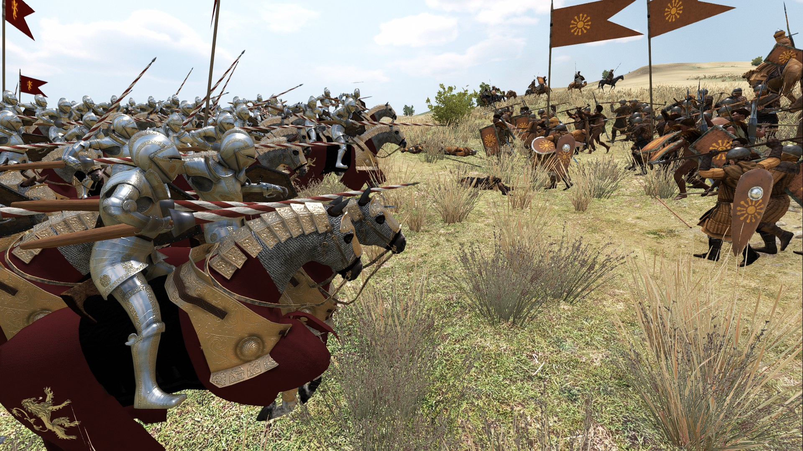
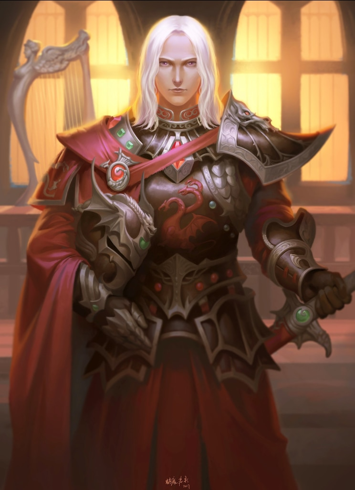
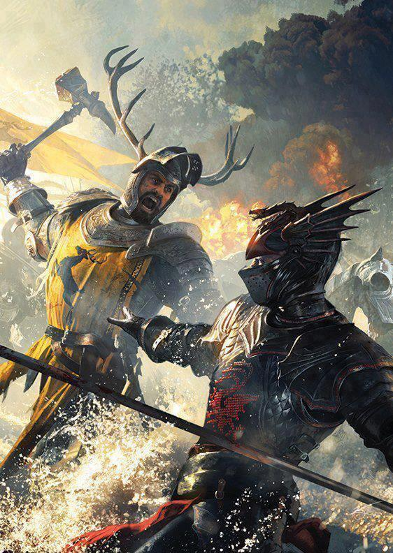
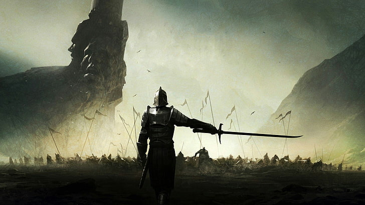
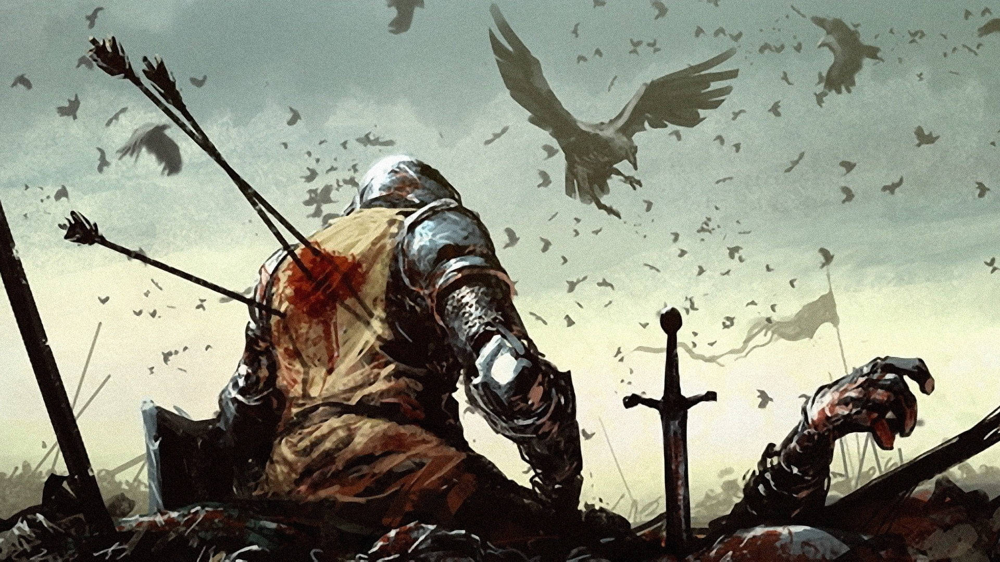

The land of dawn. Dark night and bright day, the dance of life and death
signals the start and the end of everything.
Sun brightened the sky even though war was waging on the land. Nature could not understand
the chaos that is men. Men desired peace yet waged a war for it, only for that war to bring further chaos.


Young talented warrior that stands on one side. Fierce eyes and sharp mind, prepared to cut down anyone that gets in his way.
He wished for glory and honor, but war does not go as the one desires.
On the battlefield, he slayed numerous enemies. Enemies with sword for a heart, bow for a mind, and hammer for a will.
Tough battles sharpened him. Fueling him with even more desire for glory. He hated killing, but loved the honor that came with it.


In the end, there was a huge difference between a battle and a war. One could win hundred battles, but losing the war meant the end. The moment he saw hundreds of enemies charging towards him, he knew he lost the war.
But, as long as he lived by the sword, he was prepared to die by the sword. He runs towards the charge as he whispers to himself, "Legends never die". Even when his death loomed in front of him, the fire in his eyes did not waver at all.
He fought valiantly, he fought nobly, he fought honorably. And he died. 800 years after the war,
the winds of the great plain travels above the grave of the dead warriors, and whispers the tale for eternity.
